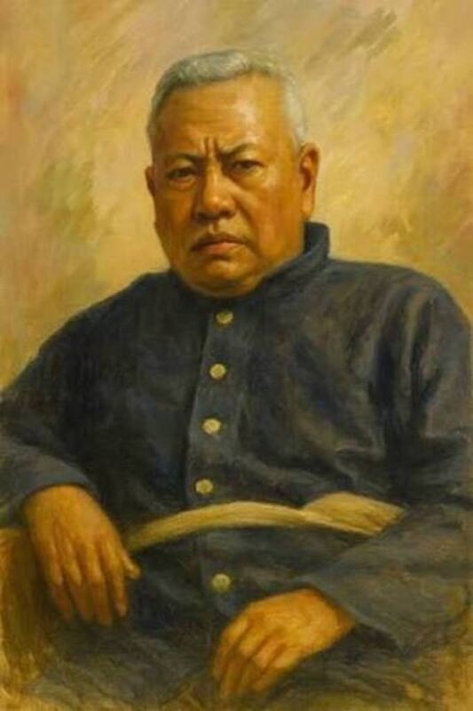

พระยากระสาปน์กิจโกศล

พระยากระสาปน์กิจโกศล
พระยากระสาปน์กิจโกศล หรือชื่อเดิมคือ นายโหมด อมาตยกุล เป็นขุนนางชั้นผู้ใหญ่ในสมัยรัชกาลที่ 4 ถึงรัชกาลที่ 5 ผู้เปี่ยมไปด้วยความสามารถด้านวิทยาศาสตร์ วิศวกรรม และเคมี ท่านได้รับการบันทึกไว้ในประวัติศาสตร์ว่าเป็น "คนไทยคนแรกที่สามารถถ่ายภาพได้สำเร็จ"
เกิดเมื่อปี 1819 (พ.ศ. 2362) – เสียชีวิตปี 1896 (พ.ศ. 2439) นายโหมดเป็นผู้ที่ฝักใฝ่ในการศึกษาวิทยาการสมัยใหม่ตั้งแต่ยังหนุ่ม ท่านได้ศึกษาวิชาเคมี ดาราศาสตร์ เครื่องจักรกล และภาษาอังกฤษ จากกลุ่มมิชชันนารีชาวตะวันตก เช่น สังฆราชปาลเลอกัวซ์ (Bishop Pallegoix) และหมอบรัดเลย์ (Dan Beach Bradley) ทำให้ท่านมีพื้นฐานความรู้ทางวิทยาศาสตร์ที่แน่นหนากว่าคนไทยทั่วไปในยุคนั้น
ในยุคแรกเริ่มที่การถ่ายภาพเข้ามาในสยาม ช่างภาพล้วนเป็นชาวต่างชาติทั้งสิ้น แต่นายโหมดได้ศึกษากระบวนการถ่ายภาพจากชาวต่างชาติ และได้สั่งซื้อกล้องถ่ายภาพตลอดจนน้ำยาเคมีจากต่างประเทศเข้ามาทดลองด้วยตนเอง ด้วยพื้นฐานความรู้ด้านเคมีที่มีอยู่แล้ว ท่านจึงสามารถทดลองผสมน้ำยาและควบคุมกระบวนการล้างอัดรูปที่ซับซ้อนในยุคนั้นได้อย่างทะลุปรุโปร่ง จนประสบความสำเร็จในการบันทึกภาพและล้างอัดภาพออกมาได้สำเร็จเป็นคนแรกของชาติสยาม
นอกจากงานรับใช้เบื้องพระยุคลบาท พระยากระสาปน์กิจโกศลยังได้เปิดห้องภาพหรือ "ร้านถ่ายรูป" แห่งแรกที่ดำเนินกิจการโดยคนไทย เพื่อรับจ้างถ่ายภาพให้กับเจ้านาย ขุนนาง และคหบดีในยุคนั้น ยังได้ถ่ายทอดวิชาการถ่ายภาพนี้ให้กับลูกหลานในตระกูลอมาตยกุล ทำให้ในเวลาต่อมา ช่างภาพจากตระกูลอมาตยกุลหลายท่านได้เข้ามามีบทบาทสำคัญในการบันทึกประวัติศาสตร์สยามผ่านภาพถ่าย